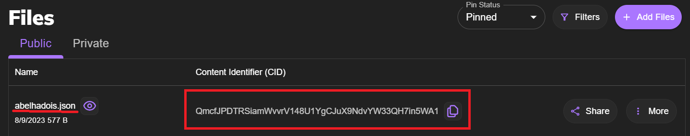

-
Abra o OpenZeppelin
-
Escolha a opção de Token ERC721 (Essa opção é a que utilizamos para criação de NFT)
-
Logo abaixo, altere o "Name" e o "Symbol" que você deseja inserir ao seu NFT
Obs: não precisa colocar nenhum endereço no "Base URL"
-
Em features, você irá encontrar uma série de opções que você pode explorar e conhecer melhor sobre. No entanto, por enquanto, usaremos apenas as opções "Mintable" e "URI Storage".
-
Após marcá-las, vemos que nosso Contrato Inteligente ao lado em Solidity já está feito e pronto para uso. Logo acima do código, há uma opção chamada "Open in Remix" que abre um editor de código muito mais interessante que outros editores devido suas funcionalidades específicas para se lidar com Contratos inteligentes. Entre lá.
1 Passo:
- OpenZeppelin -
Antes de tudo, precisamos criar nosso Smart Contract.
2° Passo:
- Alterando Código (REMIX) -
Com nosso código pronto, podemos fazer algumas observações:
Esse contrato possui muitas que vão um pouco além do que queremos agora, o que faz alguns trechos de código ficarem serem desnecessários nessa demanda.
-
Peço que deixem no código apenas a função "safeMint", enquanto as outras funções abaixo podem ser removidas, inclusive o comentário logo acima deles.
-
Após isso o Código possivelmente pode dar um sinal de erro. Isso acontece devido a linha 8 onde está escrito:
contract nomeDaSuaMoeda is ERC721, ERC721URIStorage, Ownablepeço então que você altere apague "ERC721," deixando apenas:
contract nomeDaSuaMoeda is ERC721URIStorage, OwnableDeixando o Código similar a esse:
// SPDX-License-Identifier: MIT pragma solidity ^0.8.9; import "@openzeppelin/contracts/token/ERC721/ extensions/ERC721URIStorage.sol"; import "@openzeppelin/contracts/access/Ownable.sol"; contract suaMoeda is ERC721URIStorage, Ownable { constructor() ERC721("suaMoeda", "Coin") {} function safeMint(address to, uint256 tokenId, string memory tokenURI) public onlyOwner { _safeMint(to, tokenId); _setTokenURI(tokenId, tokenURI); } }Agora pronto! Contrato 100% feito, vamos para os deploys e transações!
3° Passo:
- Deploy (Remix) -
Agora nós vamos Copilar o código para ver se ele está em seu total funcionamento.
-
Para fazer isso, basta ir no canto superior esquerdo onde há diversos setores com diferentes funcionalidades. Você deve clicar no ícone do "Solidity Compiler", logo abaixo do ícone de Lupa, depois aperte o botão azul de copilar. Caso tenha dado errado, reveja os itens anteriores.
-
Após a copilação bem-sucedida, clique no ícone de Deploy, logo abaixo do de copilação.
-
na opção "ENVIRONMENT", escolha a opção MetaMask que irá direcionar a sua carteira. Caso essa opção não apareça, possivelmente é porque seu Navegador não está conectado a sua Metamask.
-
Nas aréas "ACCOUNT", "GAS LIMIT" e "VALUE" não precisa alterar nada, apenas certifique-se de que em "ACCOUNT" é o endereço da sua carteira.
-
Na área de "CONTRACT", certifique-se de que está selecionado o contrato com o nome do seu NFT. Caso não, selecione essa opção.
-
Feito tudo isso, pronto!
Apenas aperte o botão "DEPLOY" em laranja -
Após isso o programa irá solicitar o pagamento do gás na sua MetaMask, confirme.
-
Depois de tudo isso, ele irá gerar um endereço do Contrato e é aí onde ta o segredo.
4° Passo:
- safeMint-
-
Feito o deploy, logo abaixo seu endereço do contrato é gerado. Vá até ele e abra-o clicando na seta ao lado.
-
Você encontrará diversas caixas com dados diversos, porém vamos buscar somente uma chamada "SafeMint" que é onde poderemos mintar de fato nossa nova NFT. Abra ela pela seta ao lado.
-
Ao abrir, você encontrará 3 opções chamadas "to", "idToken" e "uri"
-
Em "to" você coloca o endereço da sua carteira
-
em tokenID você põe o ID do que você queira que seu NFT possua, pode ser qualquer número. Recomendo o número 1, por enquanto.
-
Já no "uri" possui uma condição especial. Você deve gerar um ipfs de um JSON com as informações que a NFT irá ter que, no caso, são o nome da NFT, descrição e, é claro, uma imagem. Portanto, antes de botarmos nosso ipfs aqui, vamos fazer o JSON e o próprio IPFS antes?
-
Voltaremos nessa parte em breve quando o JSON estiver pronto.
5° Passo:
- JSON -
Se precisamos de um JSON, vamos fazer um JSON!
-
Abra o VSCode e crie um arquivo Json. (ex: nft.json)
-
Crie um Dicionário com as chaves "name", "description" e "image"
. -
O valor de "name" e "description" é da sua preferencia, já que elas quem vão ditar o nome e a descrição que você quiser colocar na sua NFT. No meu caso, o "name" será "Abelha" e a "description" será "Bzz bzz"
Ficará algo em torno disso:
{ "name": "Abelha", "description": "Bzz Bzz", "image": "" } -
Já em Image é um processo diferente. Você precisa colocar o IPFS da imagem. Mas como conseguimos isso? Vamos descobrir! Voltaremos aqui daqui e pouco para completar o JSON
6° Passo:
- PINATA -
-
Entre no site Pinata.com
-
Após fazer seu Login, entrará na página principal. Nela você verá um botão no canto superior direito chamado "Add Files" e selecione a opção "File".
-
Após isso, insira a imagem que você deseja pôr a sua NFT e o site irá retornar um CID para você. Esse carregamento pode demorar um pouco.
 -
Esse CID gerado, nada mais é o que precisamos para gerar fazer nosso IPFS, que é basicamente um protocolo assim como o famoso HTTP.
-
A estrutura para gerar o IPFS é bem simples:
ipfs://insira_seu_CID_aqui -
Faça isso e pronto! Nosso IPFS da imagem está gerado. Lembra o que vamos fazer com isso? Vamos colocá-lo no JSON que estávamos montando na chave "image".
7° Passo:
- Finalização do JSON e seu IPFS -
-
Agora que você tem seu IPFS da imagem, insira na chave "image" em seu JSON.
-
Salve seu arquivo JSON (ctrl + S).
-
Retorne ao Pinata e gere um novo IPFS, só que dessa vez faça especificamente desse arquivo JSON que você criou, assim como você fez com a imagem.
-
O CID do JSON agora foi gerado, basta colocar o protocolo IPFS conforme prescrito no Passo 6 - item 5.
8° Passo:
- Finalize a NFT -
-
Retorne agora ao REMIX.
-
Lembra daquele input chamado "uri"? Bem, é ai que você vai inserir o IPFS do seu JSON que acabou de criar.
-
Após isso, clique em "Transact".
- Permita o pagamento para mintar e pronto!
-
Sua NFT foi criada!
Caso queira vê-la, basta abrir o site da OpenSea Testnet e colar o endereço do seu contrato.
9° Passo:
- Coleção NFT -
Mas não viemos aqui gerar uma NFT, queremos uma coleção!
Relaxa que para criar uma coleção é bem fácil agora.
-
Para criar mais NFT's dentro da sua coleção é bem fácil agora.
-
Tudo que você precisa fazer é voltar no REMIX e alterar o "TokenID". Eu tinha recomendado a colocar o número 1, pois agora você pode fazer em ordem crescente alterando para o número 2. Mas pode ser qualquer número, basta ser diferente dos Id's anteriores.
-
Agora dê um novo "transact" e aceite o pagamento. Sua nova NFT foi gerada, basta atualizar na OpenSea e ela estará lá.
-
"Mas não dá para mudar a Imagem, nome e a minha NFT como um todo?"
Sim, Lógico! Para isso, tudo que você deve fazer é um novo JSON com as novas informações que você queira colocar e repetir o nosso processo de gerar o IPFS dele, depois disso basta trocar a "uri" no "safeMint" para o seu novo arquivo e dá um "transact" novamente.